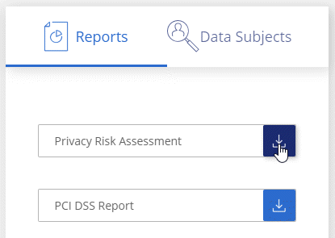
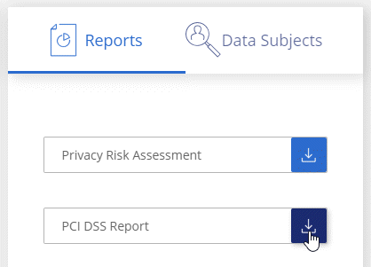

Request doc changes
Request doc changes Edit this page
Edit this page Learn how to contribute
Learn how to contributeViewing compliance reports
Contributors
Cloud Data Sense provides reports that you can use to better understand the status of your organization’s data privacy program.
By default, the Cloud Data Sense dashboards display compliance and governance data for all working environments and databases. If you want to view reports that contain data for only some of the working environments, select those working environments.

|
The reports described in this section are available only if you have chosen to perform a full classification scan on your data sources. Data sources that have had a mapping-only scan can only generate the Data Mapping Report. |
|
|
NetApp can’t guarantee 100% accuracy of the personal data and sensitive personal data that Cloud Data Sense identifies. You should always validate the information by reviewing the data. |
Privacy Risk Assessment Report
The Privacy Risk Assessment Report provides an overview of your organization’s privacy risk status, as required by privacy regulations such as GDPR and CCPA. The report includes the following information:
- Compliance status
-
A severity score and the distribution of data, whether it’s non-sensitive, personal, or sensitive personal.
- Assessment overview
-
A breakdown of the types of personal data found, as well as the categories of data.
- Data subjects in this assessment
-
The number of people, by location, for which national identifiers were found.
Generating the Privacy Risk Assessment Report
Go to the Data Sense tab to generate the report.
-
At the top of Cloud Manager, click Data Sense.
-
Click Compliance, and then click the download icon next to Privacy Risk Assessment under Reports.

Cloud Data Sense generates a PDF report that you can review and send to other groups as needed.
Severity score
Cloud Data Sense calculates the severity score for the Privacy Risk Assessment Report on the basis of three variables:
-
The percentage of personal data out of all data.
-
The percentage of sensitive personal data out of all data.
-
The percentage of files that include data subjects, determined by national identifiers such as national IDs, Social Security numbers, and tax ID numbers.
The logic used to determine the score is as follows:
| Severity score | Logic |
|---|---|
0 |
All three variables are exactly 0% |
1 |
One of the variables are larger than 0% |
2 |
One of the variables are larger than 3% |
3 |
Two of the variables are larger than 3% |
4 |
Three of the variables are larger than 3% |
5 |
One of the variables are larger than 6% |
6 |
Two of the variables are larger than 6% |
7 |
Three of the variables are larger than 6% |
8 |
One of the variables are larger than 15% |
9 |
Two of the variables are larger than 15% |
10 |
Three of the variables are larger than 15% |
PCI DSS Report
The Payment Card Industry Data Security Standard (PCI DSS) Report can help you identify the distribution of credit card information across your files. The report includes the following information:
- Overview
-
How many files contain credit card information and in which working environments.
- Encryption
-
The percentage of files containing credit card information that are on encrypted or unencrypted working environments. This information is specific to Cloud Volumes ONTAP.
- Ransomware Protection
-
The percentage of files containing credit card information that are on working environments that do or don’t have ransomware protection enabled. This information is specific to Cloud Volumes ONTAP.
- Retention
-
The timeframe in which the files were last modified. This is helpful because you shouldn’t keep credit card information for longer than you need to process it.
- Distribution of Credit Card Information
-
The working environments where the credit card information was found and whether encryption and ransomware protection are enabled.
Generating the PCI DSS Report
Go to the Data Sense tab to generate the report.
-
At the top of Cloud Manager, click Data Sense.
-
Click Compliance, and then click the download icon next to PCI DSS Report under Reports.

Cloud Data Sense generates a PDF report that you can review and send to other groups as needed.
HIPAA Report
The Health Insurance Portability and Accountability Act (HIPAA) Report can help you identify files containing health information. It is designed to aid in your organization’s requirement to comply with HIPAA data privacy laws. The information Cloud Data Sense looks for includes:
-
Health reference pattern
-
ICD-10-CM Medical code
-
ICD-9-CM Medical code
-
HR – Health category
-
Health Application Data category
The report includes the following information:
- Overview
-
How many files contain health information and in which working environments.
- Encryption
-
The percentage of files containing health information that are on encrypted or unencrypted working environments. This information is specific to Cloud Volumes ONTAP.
- Ransomware Protection
-
The percentage of files containing health information that are on working environments that do or don’t have ransomware protection enabled. This information is specific to Cloud Volumes ONTAP.
- Retention
-
The timeframe in which the files were last modified. This is helpful because you shouldn’t keep health information for longer than you need to process it.
- Distribution of Health Information
-
The working environments where the health information was found and whether encryption and ransomware protection are enabled.
Generating the HIPAA Report
Go to the Data Sense tab to generate the report.
-
At the top of Cloud Manager, click Data Sense.
-
Click Compliance, and then click the download icon next to HIPAA Report under Reports.

Cloud Data Sense generates a PDF report that you can review and send to other groups as needed.
Data Mapping Report
The Data Mapping Report provides an overview of the data being stored in your corporate data sources to assist you with decisions of migration, back up, security, and compliance processes. The report first lists an overview report summarizing all your working environments and data sources, and then provides a breakdown for each working environment.
The report includes the following information:
- Usage Capacity
-
For all working environments: Lists the number of files and the used capacity for each working environment.
For single working environments: Lists the files that are using the most capacity. - Age of Data
-
Provides three charts and graphs for when files were created, last modified, or last accessed. Lists the number of files, and their used capacity, based on certain date ranges.
- Size of Data
-
Lists the number of files that exist within certain size ranges in your working environments.
- File Types
-
Lists the total number of files and the used capacity for each type of file being stored in your working environments.
Generating the Data Mapping Report
Go to the Data Sense tab to generate the report.
-
At the top of Cloud Manager, click Data Sense.
-
Click Governance, and then click the Full Data Mapping Overview Report button from the Governance Dashboard.

Cloud Data Sense generates a PDF report that you can review and send to other groups as needed.
Selecting the working environments for reports
You can filter the contents of the Cloud Data Sense Compliance dashboard to see compliance data for all working environments and databases, or for just specific working environments.
When you filter the dashboard, Data Sense scopes the compliance data and reports to just those working environments that you selected.
-
Click the filter drop-down, select the working environments that you’d like to view data for, and click View.